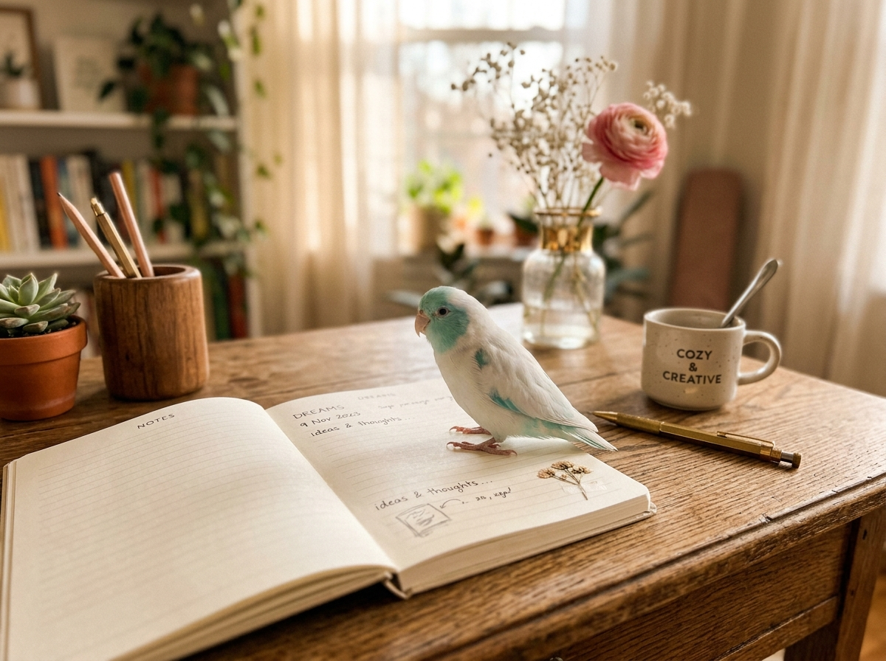
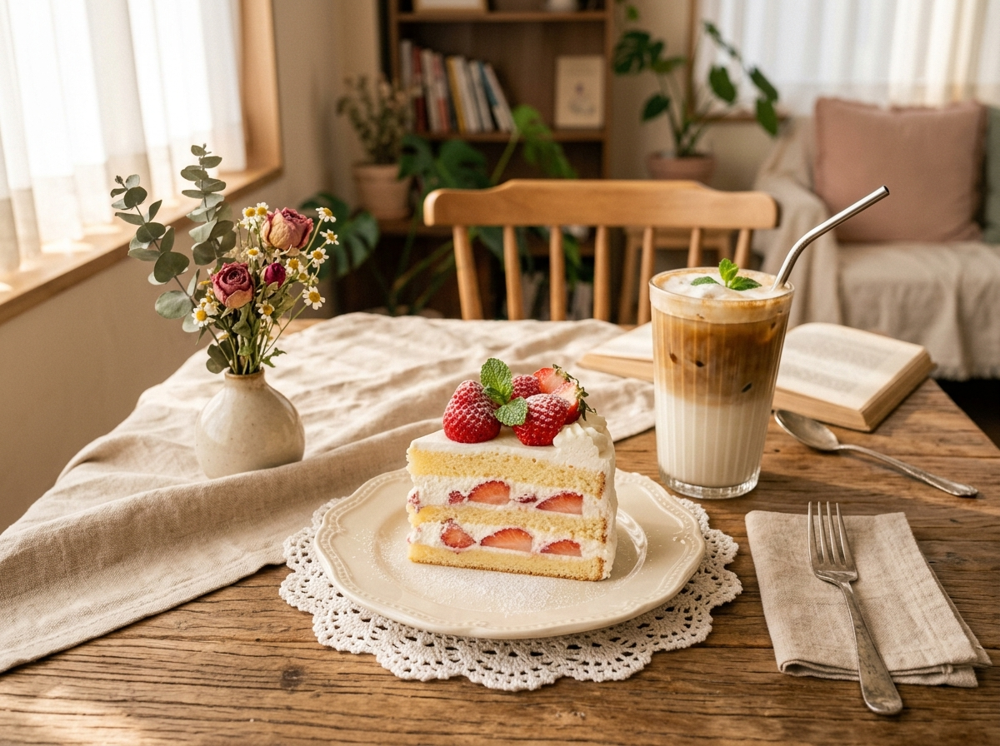

[연남동/카페] 햇살 가득한 디저트 맛집 '어텀 브리즈' 딸기 케이크 솔직 후기 🍓
입안에서 부드럽게 녹아내리는 생크림과 새콤달콤한 생딸기의 조합! 따스한 나무 결 카페 인테리어와 시그니처 아인슈페너까지 너무 완벽했던 주말 디저트 데이트 코스...
"맛있는 하루, 예쁜 순간, 그리고 소소한 행복"
안녕하세요, 미카(MIKA)입니다 🌿
반려조 앵무새 미미와 함께하는 소소한 일상, 진짜 맛있는 맛집 리뷰,
그리고 마음을 채우는 감성 여행 기록을 공유합니다.

'미카의 일상'은 매일 반복되는 평범한 하루 속에서 반짝이는 순간을 담아내는 공간입니다. 진짜 맛있는 음식 한 접시, 따스한 햇살이 드는 디저트 카페, 그리고 곁을 지키는 앵무새 미미의 애교 넘치는 하루를 나눕니다.

파스텔 에메랄드빛 깃털이 매력적인 귀요미 앵무새! 미카가 노트북으로 포스팅을 작성할 때 곁에서 총총거리며 당당하게 애교를 부리는 미카의 일상 시그니처 마스코트입니다 ♡
원하는 주제를 클릭해서 미카의 블로그 글을 찾아보세요!
"진짜 맛있는 곳만"
광고 없는 내돈내산 솔직 리뷰부터 분위기 좋은 감성 신상 카페, 지역별 숨은 디저트 맛집까지 실패 없는 맛집 지도!
"국내·해외 여행 이야기"
계절의 변화를 느끼는 드라이브 코스, 감성 가득한 숙소 큐레이션, 제주도부터 해외까지 알차게 즐기는 여행 꿀팁 코스!
"소소하지만 특별한 하루"
앵무새 미미의 커여운 성장 일기, 아기자기한 홈카페 레시피, 소소한 자취 일상 템 리뷰와 마음이 부드러워지는 하루의 조각들.
카드를 클릭하면 네이버 블로그의 해당 글 페이지로 이동합니다 ♡

🍴 맛집리뷰입안에서 부드럽게 녹아내리는 생크림과 새콤달콤한 생딸기의 조합! 따스한 나무 결 카페 인테리어와 시그니처 아인슈페너까지 너무 완벽했던 주말 디저트 데이트 코스...
봄날의 제주는 언제 가도 선물 같아요. 잔잔한 호수 둘레길을 따라 피어난 벚꽃 터널과 조용한 독채 감성 숙소에서 맞이한 아침까지! 코스 상세 동선 총정리...
요즘 털갈이 철이라 그런지 제 손가락에 머리를 대고 긁어달라고 콕콕 건드리는 미미! 노트북 키보드 위를 점령한 미미의 귀염뽀짝 모먼트 사진 모음...
붉은 벽돌과 클래식 팝송이 흐르는 분위기 끝판왕 성수 카페! 바스크 치즈 케이크와 고소한 필터 커피의 진수를 맛보고 왔습니다...
답답할 때 마음을 확 뚫어주는 동해 바다 뷰! 안목해변 커피거리부터 주문진 BTS 버스정류장까지 부담 없이 떠나기 좋은 당일치기 강릉 여행기...
여유로운 주말 아침, 향긋한 과즙 가득한 복숭아 청 만들기! 겉바속촉 수제 스콘과 함께 즐기는 나만의 아늑한 홈카페 테이블 라이프...
사진에 마우스를 올려 소소한 감성을 느껴보세요 ♡